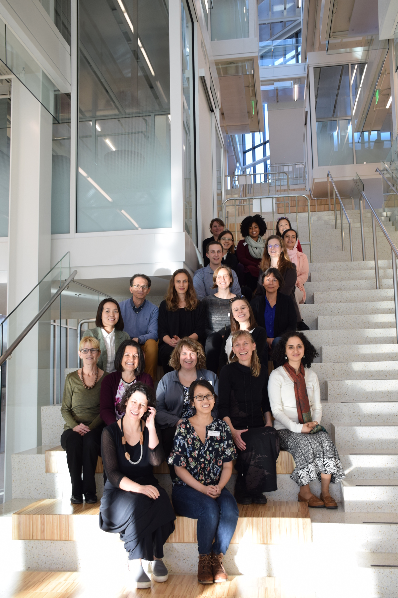

Dates
March 2-3, 2018
Meeting Place
Luddy Hall Room 1104
700 N Woodlawn Ave
Bloomington, IN 47408
Indiana University
Bloomington, IN
Indiana University Campus Map »

Click here for more photos
Click here for a welcome video from Indiana University’s First Lady, Laura Burns McRobbie
Organizers

Katy Börner
Victor H. Yngve Distinguished Professor of Engineering and Information Science, School of Informatics, Computing, and Engineering; Director, Cyberinfrastructure for Network Science Center; Curator of Mapping Science exhibit, Indiana University
Kylie Peppler
Associate Professor of Learning Sciences, Director of the Creativity Labs, School of Education, Indiana University; Lead of the MacArthur Foundation’s Make-to-Learn initiative.
Lisel Record
Curator, Mapping Science Exhibit, Cyberinfrastructure for Network Science Center, Indiana University
Kate Rowold
Professor of Fashion Design; Associate Dean, School of Art, Architecture + Design, Indiana University
Goals
Key goals of the workshop include:
- Presenting advances in technology with applications in fashion, e.g. robotics, IoT, smart and soft materials science, artificial intelligence, mind-reading devices, and visual analytics.
- Discussing promising fashion technology applications in health, sport, education, defense, entertainment, and other areas.
- Discussing relevant challenges regarding cybersecurity, privacy, and ethics.
- Advancing educational and training opportunities that combine fashion and technology, e.g., the design of IoT kits.
- Identifying synergies between academic, corporate, and governmental efforts and exploring possible sources of joint funding.
The symposium format will combine brief presentations, brainstorming sessions, tours of relevant resources at Indiana University, and hands-on sessions. Participants are invited to present their work during a live Cyberart and Fashion Technology Event. Other events include opportunities to engage attendees in hands-on sessions about the technologies central to the work.
Agenda
Click Here for presentation slides
| Day 1 – Friday, March 2, 2018 | ||
|---|---|---|
| 12:00pm | Welcome by Organizers (Katy Börner, Kylie Peppler, and Kate Rowold)
Light lunch served. |
Luddy Hall 1104 |
| 12:30pm | General Introduction by Participants | |
| 2:30pm | Social Networking Break | |
| 3:00pm |
Opening Keynote
Dana Kulić, Associate Professor, University of Waterloo |
Luddy Hall 1106 |
| 4:00pm | Brainstorm Fashion Technology Opportunities and Challenges | |
| 5:30pm | Nexus Reception - Join us at the intersection of fashion and technology for an event that is part art exhibit, part fashion show, and part tech demonstration. | Luddy Hall, 4th floor |
| Day 2 – Saturday, March 3, 2018 | ||
|---|---|---|
| 8:30am | Breakfast | Wendell W. Wright School of Education 2261 |
| 9:00am |
Tour Research, Design and Maker Spaces at Indiana University
|
Wendell W. Wright School of Education 2266 |
| 10:30am | Parallel Brainstorming Sessions | Luddy Hall 1104 |
| 12:00pm | Lunch | |
| 1:00pm | Second Best Ideas | |
| 2:00pm | Social Networking Break | |
| 2:30pm |
Closing Keynote
Yvonne Rogers, Professor of Interaction Design & Director of UCLIC, Deputy Head of Computer Science, University College London |
|
| 3:30pm | Closing Remarks | Luddy Hall 1104 |
| 4:00pm | Adjourn |
Participants
External
Cindy Bethel
Associate Professor of Computer Science and Engineering Department, Mississippi State University
Kate Hartman
Associate Professor, OCADU
Jennifer Jacobs
Postdoctoral Fellow, Stanford University
Dana Kulić
Associate Professor, University of Waterloo
Jie Qi
Cofounder and Creative Director, Chibitronics

Maryam Rahnemoonfar
Assistant Professor of Computer Science and Director of Computer Vision and Remote Sensing Laboratory ( Bina Lab), Texas A&M University-Corpus Christi
Yvonne Rogers
Professor of Interaction Design & Director of UCLIC, Deputy Head of Computer Science, University College London
Indiana University
Heather Akou
Associate Professor, Director Sage Collection, SoAA+D, Indiana University
Justin Bailey
Assistant Professor, SoAA+D, Indiana University
Maureen Biggers
Director, CEWiT, Indiana University

Deb Christiansen
Director of Undergraduate Studies, Senior Lecturer, SoAA+D, Indiana University
Heidi Davis-Soylu
Director of Education, Eskenazi Museum of Art, Indiana University
Margaret Dolinsky
Associate Professor, SoAA+D, Indiana University
Peg Faimon
Dean of SoAA+D, Indiana University
Pnina Fichman
Professor, Director - Rob Kling Center for Social Informatics, SICE, Indiana University
Lori Frye
Visiting Lecturer, SoAA+D, Indiana University

Ben Jelen
PhD Student, Health Informatics, Indiana University
Anna Keune
Doctoral Student, Learning Sciences, Indiana University
Jee Kim
Lecturer, SoAA+D, Indiana University
Sarah Lasley
Lecturer, SoAA+D, Indiana University
Dennis Mu
Fashion Design and Culture Graduate Student, SoAA+D, Indiana University
Nitocris Perez
Emerging Technology Analyst, UITS, Indiana University
Jon Racek
Senior Lecturer, SoAA+D, Indiana University
Katie Siek
Director of Informatics Undergraduate Studies, Indiana University
Naomi Thompson
Graduate Student, Learning Sciences, Indiana University
Jiangmei Wu
Assistant Professor, SoAA+D, Indiana University
Tours
The Make, Innovate, Learn Lab (MILL) [School of Education 2266] provides educators, curious tinkerers, and inspired inventors a space to understand and demonstrate the guiding pedagogies behind making. The first of its kind to open on the IUB campus, the MILL is a place where IUB students and faculty can pursue teaching, learning and research on making that bridge across multiple disciplines.
The
MAD LABS
(Makerspace for Art + Design)
[Fine Arts 141]
are the digital fabrication labs for the School of Art, Architecture and
Design. Since their inception in January of 2016 the MAD LABS have facilitated the research of individuals
from Chemistry, Physics, Biology, Kinesiology, Art History, Kelley School of Business, Informatics, the
Media School, Radio and Television, and all units from the School of Art, Architecture and Design.
The
Sage Fashion Collection
[Fine Arts 104]
, overseen by the School of Art, Architecture + Design, serves as a research resource for students, professionals,
and the public. Established in 1913, current holdings are in excess 24,000 objects of men's, women's,
and children's dress and adornment. The collection’s curators have pulled a few pieces that illustrate
changing materials, technology, and approaches to adorning the human body.
The
Visual Insights Studio
[Luddy Hall 4012]
is one of six teaching labs in the Intelligent Systems Engineering (ISE) Department.
The VIS provides easy access to cutting-edge technologies including an ultra-high resolution large-scale
display wall, audio equipment, HTC VIVE, and Microsoft HoloLens setups for data visualization, scientific
visualization, and virtual/augmented/mixed reality R&D.
The
3D Fabrication and Design Inquiry Labs
[Luddy Hall 4010]
in the School of Informatics, Computing, and Engineering are a rich network of design, digital inquiry,
and physical computing development environments for students, faculty, and staff where learning experiences
are channeled through hands-on activities. SICE digital fabrication spaces additionally serve as centers
for STEM-oriented education outreach and community partnership building, as well as robust facilities
to support the School’s research efforts.
Events
Opening Keynote - Dana Kulić
Friday, March 2
3:00-4:00pm
Luddy Hall 1106
Title: Designing Engaging Interactions through Movement: Experiments with Near Living Architecture
Abstract:
Can architectural environments provide an engaging and emphathetic interaction with occupants? In this talk, we describe
our work designing movement based interaction strategies for the Hylozoic Series architectural environments.
We propose an approach for adapting the Intelligent Adaptive Curiosity learning algorithm previously
introduced in the developmental robotic literature to distributed interactive sculptural systems.
This Curiosity-Based Learning Algorithm (CBLA) allows the system to learn about its own mechanisms
and its surrounding environment s through self-experimentation and interaction. A novel formulation
using multiple agents as learning subsets of the system that communicate through shared input variables
enables us to scale the learning algorithm to a much larger system with diverse types of sensors
and actuators. Experiments on a prototype interactive sculpture installation demonstrate the exploratory
patterns of CBLA and the collective learning behaviours through the integration of multiple learning
agents.
Bio: Dana Kulić received the combined B.A.Sc. and M.Eng. degrees in electromechanical engineering,
and the Ph.D. degree in mechanical engineering from the University of British Columbia, Canada, in
1998 and 2005, respectively. From 2006 to 2009, she was a JSPS Postdoctoral Fellow and a Project
Assistant Professor at the Nakamura Laboratory at the University of Tokyo. She is currently an Associate
Professor at the Electrical and Computer Engineering Department at the University of Waterloo, Canada.
She is an Associate Editor with the IEEE Transactions on Robotics and the ACM Transactions on Human-Robot
Interaction. In 2014, she was awarded Ontario’s Early Researcher award for her work on rehabilitation
and human-robot interaction. Her research interests include human motion analysis, robot learning,
humanoid robots, and human-machine interaction.
Nexus
Friday, March 2
5:30-7:00pm
Luddy Hall, 4th floor
RSVP requested
Join us at the nexus of fashion and technology for an event that celebrates the work of Fashion Technology
Symposium participants. From wearable art to cyberart and from robotics to new materials, see how innovative
technologies come together at an event that is equal parts art exhibit, fashion show, and tech demonstration.
Light refreshments will be served.
Closing Keynote - Yvonne Rogers
Saturday, March 3
2:30-3:30pm
Title: Can Technology be Fashioned?
Abstract:
The availability and affordability of mobile, wearable, tangible, physical, augmented reality and IoT technologies has made
it possible for us to dream; conjuring up all manner of new designs, experiences, and augmentations.
Designers, developers, school children, researchers and the general public now have an ever-increasing
toolkit of possibilities at their fingertips by which to make, create and envelop bodies. But how
do they choose what to do and which components to combine? Can technology be fashioned and fashion
be technologized to make truly remarkable experiences but which are also grounded in utility and
usefulness?
Bio: Yvonne Rogers is the director of UCLIC, an interdisciplinary centre that straddles the psychology
and computer science departments at University College London. Her research interests lie at the
intersection of human-computer interaction, behavioral change and physical computing. Much of her
work is situated in the wild - concerned with informing, building and evaluating novel user experiences
through creating and assembling a diversity of technologies (e.g. tangibles, internet of things)
that augment everyday, learning, community engagement and collaborative work activities. She has
been instrumental in promulgating new theories (e.g., external cognition), alternative methodologies
(e.g., in the wild studies) and far-reaching research agendas (e.g., “Being Human: HCI in 2020” manifesto).
She is a co-author of the definitive textbook on Interaction Design, now published in its 4th edition.
Over 200,000 copies have been sold worldwide and the book has been translated into 6 languages. She
has also published over 300 articles, including two monographs “HCI Theory: Classical, Modern and
Contemporary” and "Research in the Wild". She was recently elected as a fellow of the ACM.
Acknowledgements
This collaborative workshop is the joint product of the School of Informatics, Computing, and Engineering, the School of Art, Architecture, and Design; and the School of Education, all at Indiana University. We gratefully acknowledge support from the Bill Blass Fund, the Creativity Labs, Department of Informatics, and the Cyberinfrastructure for Network Science Center at Indiana University.